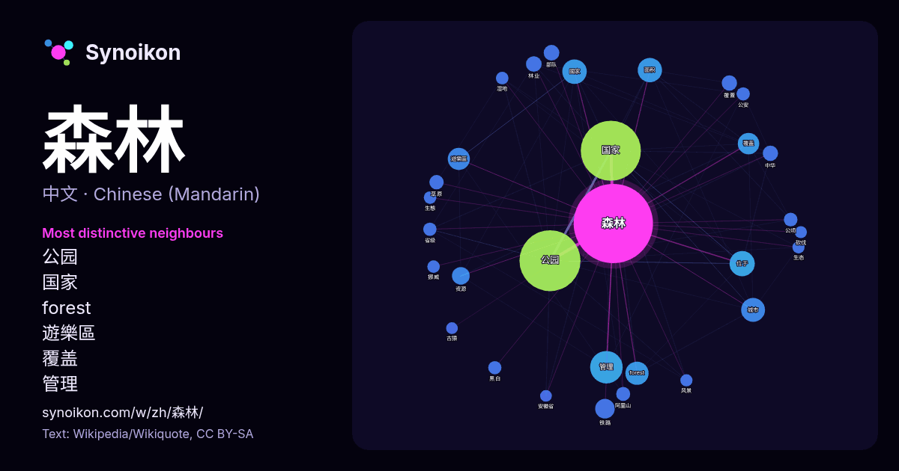

中文 · 每日一词列表
森林
“forest” · 来自维基百科, Wikiquote 1693 次出现中其周围的词。

最具特色的邻近词
- 公园 181×
- 国家 76×
- forest 52×
- 遊樂區 47×
- 覆盖 35×
- 管理 29×
- 林业 24×
- 位于 23×
- 资源 22×
- 覆蓋 20×
- 阿里山 20×
- 草原 18×
- 公顷 18×
- 黑白 17×
- 國家 17×
- 城市 16×
- 省级 16×
- 公安 16×
- 铁路 15×
- 湿地 15×
× = 比维基百科普通文本中多出的倍数。
最常见的邻近词
- 公园 379
- 国家 368
- 管理 108
- 位于 65
- 國家 61
- 面积 60
- 城市 58
- forest 55
- 遊樂區 50
- 覆盖 47
- 中国 39
- 铁路 39
- 人民 37
- 资源 32
- 林业 25
- 美国 25
- 部队 25
- 面積 25
- 中华 24
- 覆蓋 24
上下文
- 森林仍然能保持著原始森林的原貌。同時75％以上的這些完整的森林，在於這三個地廣人稀的國家，俄羅斯的寒帶森林和加拿大的寒帶森林和巴西的熱帶雨林。根据2006年3月2日绿色和平发布的世界森林地图，用卫星图像对全球森林进行了评估，发现地球上只剩下10%的陆地面积是未受侵扰森林。 148个森林 Wikipedia snippets · 森林
- 2026陸劇推薦《鋼鐵森林》開播！. BAZAAR. 2026-04-04 [2026-04-14]. 《鋼鐵森林》線上看劇情6亮點. 女人我最大. [2026-04-14]. 《鋼鐵森林》影視原聲带. spotify. [2026-04-14]. 《鋼鐵森林》的新浪微博 豆瓣电影上《鋼鐵森林》的資料 （简体中文） Wikipedia snippets · 鋼鐵森林
- 《重慶森林》（英語：Chungking Express）是1994年上映的一部香港電影，由王家衛執導，梁朝偉、林青霞、王靖雯（王菲）、金城武、周嘉玲主演。片名「重慶森林」以香港的重慶大廈隱喻指城市的水泥森林，講述人們在稠密的現代化大都市香港生活中的孤獨內心世界；電影主題曲《夢中人》由王菲主唱。本片獲 Wikipedia snippets · 重庆森林
- Dream），是威廉·莎士比亞在約1590年－1596年間創作的浪漫喜劇。它描繪了以雅典大公爵忒修斯和希波呂忒婚禮為中心的一系列故事。包括四名雅典戀人和六個業餘演員的冒險經歷，而森林裡的仙子們則在背後操作它們的命運。本戲劇是莎士比亞最流行的劇本之一，在全世界都有上演。 劇情共有三個主軸，剛好都跟慶祝忒修斯公爵和希波呂忒女王的婚禮 Wikipedia snippets · 仲夏夜之夢
- 森林砍伐，或稱森林開伐、去森林化（Deforestation）、森林破壞，意為人為的將森林地轉成耕地、牧場、城市等非森林用途的行為。一般來說，森林開伐會造成環境退化和物種多樣性的減少。許多國家還在進行森林開伐，造成了氣候變遷和地理環境的改變。因為森林砍伐後沒有足夠的造林，結果破壞水土、氣候變遷、物種多樣性減少和生活品質 … Wikipedia snippets · 森林砍伐
- 《山中森林》是一部2022年臺灣黑幫電影，由導演姜寧執導，李康生、謝承均、李千娜、邱勝翊、郭雪芙、陳德容、黃遠等人領銜主演，也入選為高雄電影節的閉幕片。原作劇本入圍第43屆優良電影劇本作品。 阿生曾是混跡中山區的黑道，年輕時為救兄弟沙鷗入獄12年。近期假釋的他，面對曾叱吒風雲的林森北路，十幾年的空白，讓他感到似又熟悉似又陌生 … Wikipedia snippets · 山中森林
- 布列敦森林制度（英語：Bretton Woods system）是1944年7月至1973年間，世界上大部分國家加入以美元作為國際貨幣中心的貨幣制度。 布列敦森林協定對各國就貨幣的兌換、國際收支的調節、國際準備資產的構成等問題共同作出的安排所確定的規則、採取之措施及相應組織機構形式的總和。該協定源自 Wikipedia snippets · 布雷顿森林体系
- 《白雪公主》（德語：Schneewittchen）是廣泛流传于歐洲的一篇德國童話。其最著名的版本見于德國《格林童話》，講述了故事主角白雪公主受到繼母（格林童話最初手稿中為生母）的虐待，逃到森林裡，遇到七個小矮人的故事。 在原本的格林童話版本中，白雪公主的故事是這樣的： 從前在一個遙遠的王國裡住著一對國王夫婦，這個王國中的皇后是一位善良又美 Wikipedia snippets · 白雪公主
更多词
于 2026-10-09 以默认设置预先计算（±5 个词，中等语料）。交互式图可用实时数据刷新。
界面为机器翻译，欢迎指正。